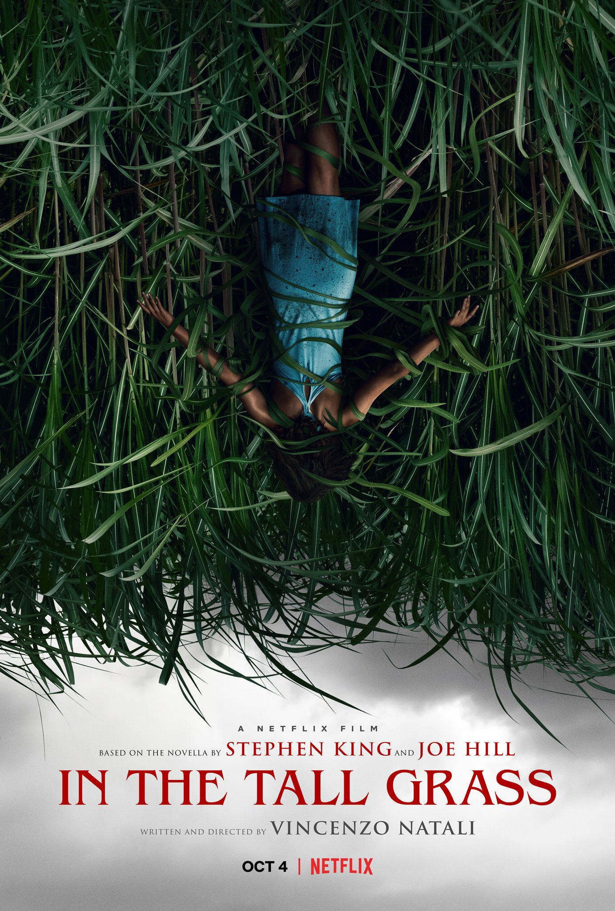

Annabelle 3O NinhoA Morte do DemônioCampo do MedoViveiroMenu
A ver
A Morte do Demônio a AscensãoM3gan
Annabelle 3
Os investigadores paranormais
Ed e Lorraine Warren mantêm a boneca Annabelle
trancada em uma sala de artefatos em sua casa.
No entanto, em uma noite terrível,
Annabelle desperta outros espíritos malignos e ameaça a jovem filha do casal
e suas amigas.
O Ninho
Samuel é um menino paraplégico que mora com a mãe Elena em uma mansão isolada. Proibido de sair da casa, ele fica insatisfeito e inquieto. Quando conhece Denise, uma empregada adolescente, ele finalmente encontra forças para se opor às restrições de sua mãe e se abrir para o mundo.
A Morte do Demônio
Mia é uma viciada em drogas que, para vencer seus demônios pessoais, vai com seu irmão David, a namorada do irmão, Natalie, e os amigos de infância Olivia e Eric até uma cabana rústica, que pertence à família. Assim que chegam, descobrem que a cabana foi invadida e que o porão parece uma espécie de altar, rodeado por animais mumificados, onde a descoberta de um Livro dos Mortos invoca forças demoníacas. A presença do mal os possui até que apenas um é deixado a lutar pela sobrevivência.
Campo do Medo
Uma mulher grávida e seu irmão entram em um matagal para ajudar uma criança perdida, mas acabam ficando presos na mata fechada também. Eles descobrem que há um poder sombrio habitando a região e precisam encontrar uma forma de escapar.
Viveiro
Na esperança de encontrar o lugar perfeito para morar, um jovem casal acompanha um estranho corretor de imóveis até um bairro misterioso repleto de casas idênticas. Ao tentarem sair do local, eles percebem que estão presos em um labirinto surreal que misteriosamente os leva de volta para onde começaram.
Menu
Um jovem casal visita um restaurante exclusivo em uma ilha remota onde o aclamado chef prepara um delicioso menu e algumas surpresas chocantes.
A Morte do Demônio a Ascensão
Data de lançamento:
21 de Abril 2023
M3gan
M3GAN é uma maravilha da inteligência artificial, uma boneca realista programada para ser a melhor amiga de uma criança. Uma robótica brilhante dá a sua jovem sobrinha um protótipo M3GAN, mas a máquina logo se torna violenta.